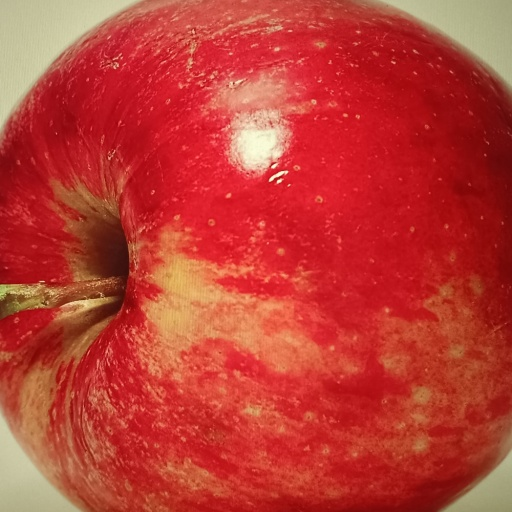

The Spatial Blind Spot & What An Ideal Solution Requires
Why traditional canes and current vision AI fail to serve visually impaired individuals in personal daily spaces.
Smart Canes Stop at the Floor
White canes and ultrasonic smart canes navigate macro-pathways (0–15 cm ground obstacles: curbs, steps, walls). They offer zero awareness at desk or dining height, where blind individuals spend their working and social lives eating, working, and interacting.
Generic AI is a Noisy Firehose
Standard assistive apps (Seeing AI, Lookout, YOLO+TTS) blast 10 bounding boxes per second into headphones: "Bottle 82%, Cup 74%, Chair, Table, Laptop...". Hearing is a blind person's primary spatial sense; a noisy AI effectively blinds their hearing.
Zero Memory & Screen Hallucinations
Standard models possess zero temporal memory: if a coworker moves a water bottle, the app doesn't know the user believes it's still on their right. Moreover, raw neural networks are easily fooled, classifying a flat iPad photo of an apple as a real object with >95% confidence.
Proactive Silence (Theory of Mind)
The system must maintain two concurrent mental models: Physical Reality vs User Belief. It must remain completely silent by default, speaking only when reality diverges from belief.
System 2 Physical Anti-Spoof
Vision cannot rely solely on 2D pixels. It requires active optical physics (exposure-locked flash pulses) to analyze surface normal curvature and reject flat screen photos before hands reach for them.
Closed-Loop Motor Guidance
High-speed GPU hand tracking (<50ms latency) to steer reaches toward targets using gentle spatial cues, and immediately freeze reaching hands mid-air if heading toward a moved or spilled item.
Complete Capabilities & Technical Realization Matrix
A direct mapping between user-facing capabilities and our rigorous, offline edge engineering implementation.
WorldMap vs BeliefMap; state diff triggers alert only on divergence.
The Sally–Anne Divergence Engine (Two-Map Simulation)
Interact with the tabletop workspace. Observe how SAARTHI enforces Proactive Silence until reality diverges from belief.
System 2: The Torch Test (Physics vs Deep Learning)
How exposure-locked LED flash pulses and Wald's SPRT eliminate screen photo spoofing.


Computed Physical Reflectance & SPRT Analysis
Generated directly from user-supplied photographic captures (Real_Apple.jpg vs Image_Apple.jpg) via Laplacian curvature & Wald's SPRT.

Event-Driven Architecture & Real-World Resilience
How raw sensors, state estimators, cognitive engines, and thermal governors execute reliably on edge hardware.
The 4-Stage Event-Driven Pipeline
Mobile NPUs heat up under continuous 30fps computer vision. Our governor actively modulates workload to sustain <45°C:
Tri-axial accelerometer continuously samples at 50Hz:
Free-fall (<0.3g) → Impact (>3g) → Stillness (>10s) → 15s Audio Countdown → SMS with GPS